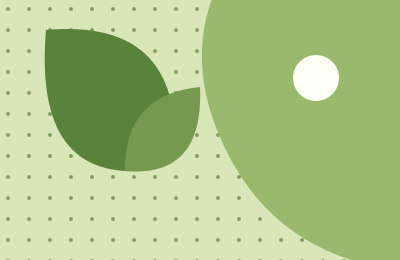
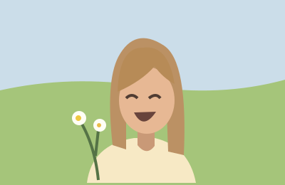
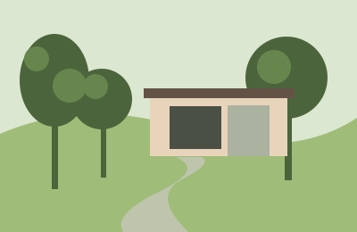
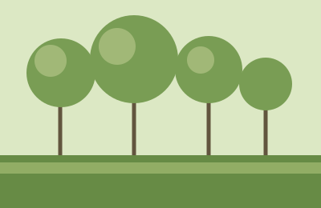
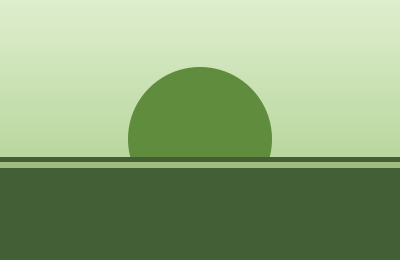

طراحی فضای باز
از نقشهٔ اولیه تا کاشت آخرین درخت.
دربارهٔ این خدمتپارکها، باغها و حیاطهایی طراحی میکنیم که آب را نگه میدارند، هوا را خنک میکنند و آدمها را به هم نزدیکتر.
طراحی، بومشناسی و تجربهٔ مردم محله را کنار هم میگذاریم تا جایی برای ماندن بسازیم.
از نقشهٔ اولیه تا کاشت آخرین درخت.
دربارهٔ این خدمتسایه، نفوذ آب و جایی برای خنک ماندن.
دربارهٔ این خدمتبرنامهریزی همراه با کسانی که در محله زندگی میکنند.
دربارهٔ این خدمتاز تراس کوچک تا پارک محله، هر پروژه با شناخت خاک، نور و زندگی روزانهٔ آن مکان شروع میشود.





نیازهای فضا و آنچه دوست دارید تغییر کند را بنویسید. خلاصهٔ درخواست بهصورت فایل روی دستگاهتان ذخیره میشود.
این نقشه بخشی از نمونهٔ طراحی است. هنگام راهاندازی، نشانی و موقعیت واقعی اینجا قرار میگیرد.